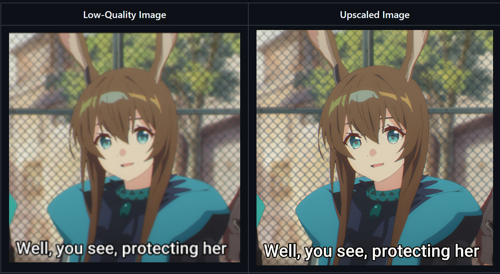

← Go Back
Anime Image Upscaling with Fine-Tuned Real-ESRGAN (M-ESRGAN)

Screenshot of the Upscaler
In this project, we explored a variety of Deep Learning models to upscale anime images. After thorough testing and comparison, the R-ESRGAN 4x model demonstrated the best results. Our goal is to fine-tune the R-ESRGAN model specifically for anime and anime upscaling tasks.
- We sourced our image dataset from existing anime content.
- Annotate the dataset for relevant features.
- We run the Python code in the imageGenCode folder to annotate the images in 3 Categories.
- Generate low-resolution image variants to simulate input for the model.